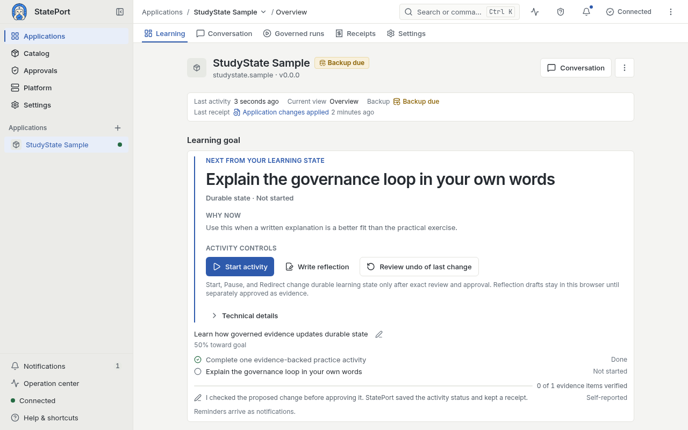
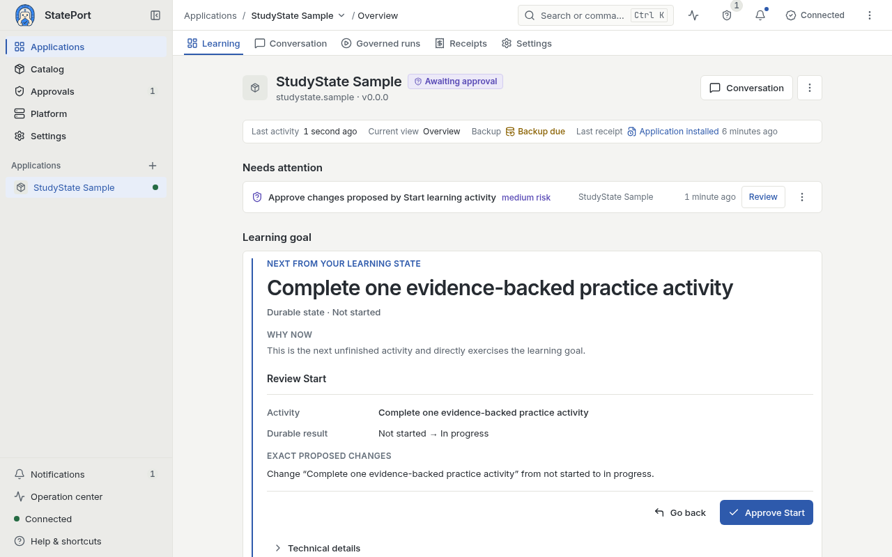
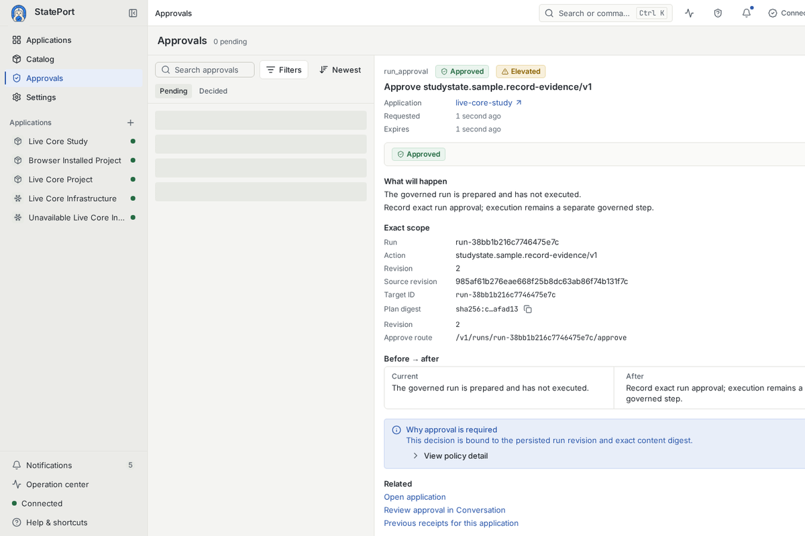
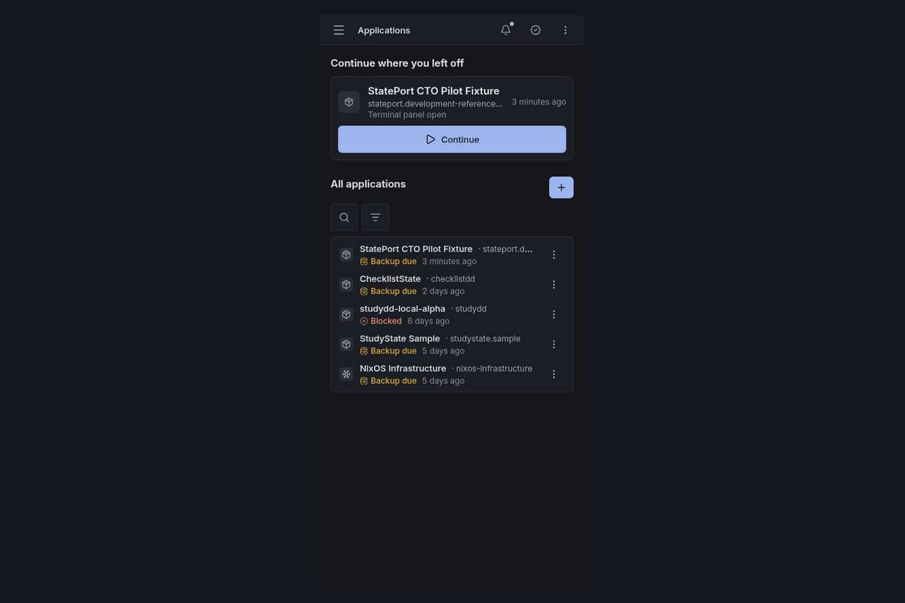

{kind=link}
{kind=link}
{kind=link}
{kind=link}
01
Your work stays yours
Goals, decisions, and history live in readable files on your own machine — not in a session locked inside someone else's chat.
 StatePort
StatePort
A lasting home for AI-assisted work
AI chats forget. Your work should not. StatePort gives AI-assisted applications a lasting home on your computer. Goals, decisions, and history stay in files you can open. You review important changes before they happen.
The Alpha.10 installer is available for an owner test on Windows 11 with WSL2 and Ubuntu 24.04.Install Alpha.10

View full sizeProduct walkthrough
See an application remember your work, show a proposed change, and record what happened. Captions and a transcript are included.
A 33-second product overview recorded in August 2026. The closing Alpha.3 status line is out of date; check the current release status.
AI chats forget. Your work shouldn't. StatePort gives AI-assisted work a durable home on your own machine.
A real app retains its context: the study plan, the progress, the evidence — not a blank chat box.
Consequential changes are reviewed before they land — and they stay undoable.
And every run leaves a receipt: what was asked, what was allowed, what was done.
StatePort alpha.3 is published for inspection — installation is disabled while we fix it. See exactly where things stand.
One journey, shown step by step
The StudyState preview follows one simple flow. Ask what to do next. Get an answer based on your goal and progress. Review a proposed change. Keep a clear record of the result.
Click any screen to inspect it at full size.

The answer uses the application's saved goals and progress.

Check the proposal before it changes your saved work.

The preview stays readable on a smaller screen.
Why it matters
01
Goals, decisions, and history live in readable files on your own machine — not in a session locked inside someone else's chat.
02
Goals, decisions, and history live in durable files so you can pick up where you left off.
03
Important changes are proposed first. You can inspect the result and see what happened.
How it works
01 / TEMPLATE
Each application combines a focused workflow with files that hold your goals, progress, and history.
02 / RUN
StatePort shows what the application wants to do and asks before important changes.
03 / KEEP
Your application keeps its decisions, files, and history together on your machine.

Choose a deeper route
Curious
Follow the interface from a question to a reviewed result.
Open the product walkthroughBuilders
Learn how StatePort stores work, controls changes, and stays portable.
Open the documentationSelf-hosters
See what you can view or download today.
Open the release statusEarly direction: Agent Kits remain an early direction, not a released capability. Read the scoped roadmap.